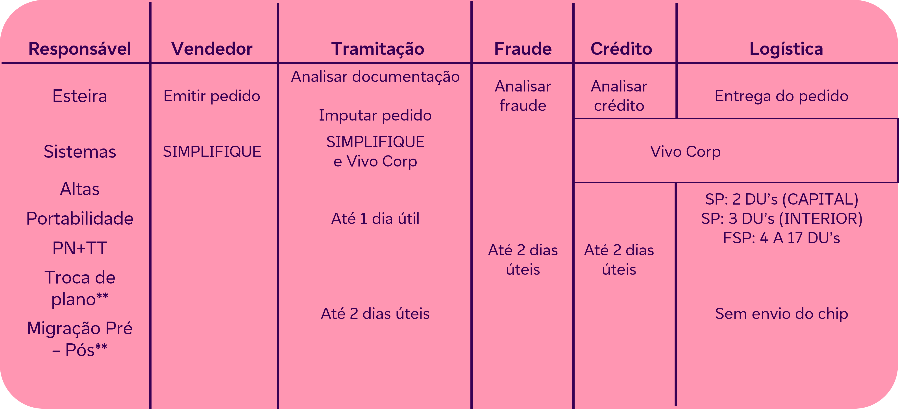

A ferramenta MIRA, integrada ao Simplifique, não só nos ajuda a identificar a carteira a que esse cliente pertence, mas também nos oferece uma visão abrangente das ofertas e produtos que podem auxiliar no crescimento da empresa dele.
Em um mercado cada vez mais competitivo, a jornada do cliente B2B desempenha um papel crucial na construção de relacionamentos duradouros e na tomada de decisões estratégicas.
Sabe quando?
Quando o cliente entra em uma loja da Vivo! É nesse momento que ele procura soluções que atendam às necessidades práticas de sua organização, elevando o ambiente de trabalho a um novo patamar.

Jornada personalizada desde o primeiro passo!
A experiência começa quando o cliente retira a senha mostrando que deseja um atendimento focado em serviços B2B.
Em seguida, ele é encaminhado diretamente para os especialistas em produtos B2B.
Nosso DNA!
Da senha ao atendimento especializado, manifestamos nosso compromisso em proporcionar uma experiência centrada no cliente, estabelecendo as bases para uma jornada fluída e satisfatória.
Com o B2B em lojas, ampliamos nossa atuação com todos os nosso clientes de forma assertiva e encantadora.
Agora, além de oferecer soluções excepcionais para clientes B2B, estamos ampliando nossos serviços para atender às necessidades do mercado empresarial. No primeiro contato, o consultor JR aborda o cliente e entende suas necessidades.
Você não está sozinho!
Para vendas B2B, temos uma equipe especializada pronta para oferecer suporte e ferramentas que ajudarão no momento da venda, no Info B2B (clique aqui) e grupos no Teams. Além disso, contamos com recursos disponíveis para consulta:
Vivo Ligado
O Vivo Ligado é uma ferramenta indispensável; ao pesquisar "B2B", todas as informações relevantes estarão ao seu alcance, sendo a POP o primeiro documento listado.
POP
A POP é um documento com todas as informações importantes para uma venda B2B na loja. Ela é regularmente atualizada e serve como o principal guia, contendo todas as orientações necessárias.
Quando surgirem dúvidas sobre onde encontrar informações, lembre-se: é essencial realizar a pesquisa na POP ou entrar em contato com Info B2B para o suporte necessário! Isso pode economizar tempo e fornecer respostas mais precisas sobre suas dúvidas.
Quem são exatamente os clientes B2B e como determinar o que oferecer a eles?

Quem
são?
· Clientes que não têm linhas B2B;
· Clientes que já têm linhas B2B, mas gostariam de ampliar seus
produtos;
· Clientes que já têm linhas B2B e desejam realizar um upgrade nos
produtos ou renegociar.
Como
descubro?
· Perguntar ao cliente se ele já conhece o atendimento B2B na
loja;
· Perguntas assertivas em relação à necessidade do cliente;
· Verificar disponibilidade de ofertas B2B no Salesforce.
Com o B2B em lojas o horizonte
comercial do nosso cliente vai além do básico.
comercial do nosso cliente vai além do básico.
E como identificar uma oportunidade para o cliente?
Nossa plataforma Salesforce B2C agora está equipada para destacar clientes com CPFs associados aos CNPJs, indicando oportunidades valiosas de vendas B2B. Esteja atento ao mural de avisos para identificar essas oportunidades e oferecer produtos e serviços da Vivo Empresas que atendam às necessidades das empresas.
“Como consultor da Vivo, estou aqui para apresentar as vantagens
exclusivas que oferecemos para clientes com CNPJ, como o você.
Além de um atendimento dedicado diretamente na sua loja, nossas
soluções B2B são mais econômicas, com pacotes de serviços e
aparelhos a preços reduzidos. Você também pode aproveitar a
facilidade de incluir o valor do aparelho na fatura da sua
empresa.
Com tudo isso em mente, permita-me perguntar: gostaria de
aproveitar nossos serviços de atendimento ao CNPJ aqui mesmo na
sua loja? Estou à disposição para encontrar a melhor solução
para as necessidades do seu negócio.”
Na jornada para oferecer a solução perfeita ao seu cliente, ultrapassamos o simples ato de chamar a senha. Precisamos ir além e nos tornarmos um especialista que compreenda o fluxo de atendimento e esteja familiarizado com o incrível portfólio B2B. Está pronto para essa transformação e encantar seu cliente?
Nossa conexão inicia ao identificar a relação que o cliente possui com a Vivo e o perfil dele dentro do segmento B2B.
Sabe
Como?
Acesse o treinamento completo do Novo Simplifique!
Em caso de clientes de outros segmentos, procurem as lojas da
Vivo. Oriente que abriremos um chamado interno e o Gerente de
Negócios (GN) entrará em contato.
Para os clientes de outros segmentos, é importante continuar seguindo o procedimento de indicação de leads através do formulário disponível em https://vivo.tl/atendimentolp.
O SLA de retorno é de até 48 horas. Se a questão for urgente, o
cliente pode contatar a central (10315) para ter acesso ao e-mail
e telefone do gerente responsável. Para acompanhar esse chamado, é
necessário orientar o cliente a entrar em contato diretamente com
a central (10315) para obter atualizações e informações sobre o
status do seu chamado.
Atendimento ON
Clique e responda à ação!
Durante a consulta, você identificou que o cliente possui o perfil TOP/Corporate. Diante essa informação, quais os próximos passos do atendimento?
A) Prossiga com o atendimento e acione o gerente para consultar as ofertas e soluções disponíveis.
B) Informe ao cliente que, devido ao seu perfil, será aberto um chamado e o atendimento será conduzido por um Gerente de Negócios que entrará em contato diretamente com ele.
Analisar os dados do cliente na ferramenta MIRA, utilizando o Simplifique, proporciona um entendimento detalhado do histórico da parceria com a Vivo. Essa avaliação ajuda a compreender quais produtos o cliente já utilizou, abrindo espaço para identificar oportunidades para a sua negociação.
Após consultar a oferta no Mira e apresentá-la ao cliente,é indispensável verificar as informações do CNPJ. Lembre-se de sempre consultar a situação do cliente também nas ferramentas a seguir. A consulta deve ser realizada em todos os atendimentos:
É fundamental explicar ao cliente que essa é uma verificação padrão, para que não ocorra impactos na entrega ou instalação dos produtos. E em casos em que o cliente tenha débitos com a Vivo, é importante passar a orientação correta para que ele possa regularizar o mais rápido possível.
Em alguns cenários é possível encaminhar para a equipe de crédito (Vivo Crédito) o comprovante de pagamento antes da baixa sistêmica para que o pedido possa ser reinputado. Mas atente-se às regras de aprovação:
Após a efetivação da primeira parcela ou do pagamento total, o
cliente poderá prosseguir com a compra e assinatura
do contrato.
Atendimento ON
Clique e responda à ação!
Para garantir a transparência e a correção de informações, indique a seguir qual é a abordagem mais adequada para lidar com casos de CNPJs inativos ou dados discrepantes:
A) Não tomar nenhuma ação e tentar realizar a venda mesmo assim.
B) Utilizar uma abordagem cordial de verificação. Caso aconteça algum imprevisto, pedir ao cliente pra tratar e retornar à loja.
Após concluir o processo de identificação da carteira e coletar informações importantes do cliente, é hora de aprofundar o conhecimento sobre ele! É crucial compreender as necessidades do cliente, realizando perguntas sobre o número de funcionários, a quantidade de interações diárias, a gestão de fornecedores e a administração de equipes em campo.
O portfólio B2B para lojas foi desenvolvido para atrair novos clientes, destacando-se em produtos básicos de telefonia. Nossas ofertas móveis são especialmente pensadas para atender às necessidades do cliente corporativo, sendo adaptáveis a empresas de todos os tamanhos e necessidades.
#DicaB2B
Atendimento ON
Clique e responda à ação!
Diante de um cliente com CNPJ que utiliza o celular pessoal para atender seus clientes, qual abordagem é mais adequada?
A) Explorar soluções específicas do portfólio B2B, destacando os benefícios para demandas corporativas, com atendimento exclusivo e acompanhamento de um Gerente de Negócios.
B) Reforçar os benefícios dos serviços de pessoa física com um pacote mais completo e o uso de pontos no Vivo Valoriza.
Com a etapa Conhecer concluída, chegou o momento de envolver nossos clientes no mundo B2B. Você sabe como? Apresente o diferencial dos planos e serviços disponíveis em nosso portfólio.
Já sabemos que a Vivo tem a melhor cobertura 5G do Brasil e as melhores soluções para empresas, certo? Mas e quando o cliente chega à loja em busca de ajuda para entender os diferenciais em produtos e serviços que a Vivo oferece?
Atendimento ON
Clique e responda à ação!
O cliente gostou da sua abordagem e, além de serviços básicos da Móvel, ele tem necessidade em soluções de segurança. Nesse caso, qual é a abordagem adequada?
A) Seguir com o atendimento normalmente e acionar o GN responsável pela loja apenas para conhecimento dele.
B) Direcionar o cliente para o Gerente de Negócios que atenda a segmentação dele, PME ou Vivo One.
À medida que a etapa de envolvimento se aproxima do fim, é crucial estar preparado para lidar com possíveis objeções e dúvidas que o cliente possa ter sobre nossos produtos e serviços. É nesse momento que destacamos como as soluções B2B da Vivo fazem a diferença no negócio dele.
Veja algumas objeções que podem ser usadas para os planos Smart Empresas:
1 - Eficiência no trabalho remoto e equipe em campo
2 - Redução
de custos
3 - Flexibilidade para pequenas e grandes empresas
4 - Segurança
dos Dados
Argumentações Tipo Cliente + Produto
1 - Eficiência no trabalho remoto e equipe em campo
2 - Redução
de custos
3 - Flexibilidade para pequenas e grandes empresas
No Vivo V, as objeções e argumentos são diferentes:
1 - Ligações Ilimitadas e SMS
2 - Dados
3 - Conectividade constante
Argumentações Tipo Cliente + Produto
1 - Cliente não tem linhas B2B
2 - Cliente já tem linhas B2B
3 - Cliente já tem linhas B2B
Ao incorporar esses argumentos em suas vendas, você destaca os
benefícios específicos desses planos B2B ao interagir com clientes
B2C, mostrando como os produtos atendem às necessidades
específicas de produtividade
e mobilidade das empresas.
#DicaB2B
Envolver o cliente vai além da cordialidade: é necessário estar atento não apenas às suas necessidades, mas também às práticas de mercado e à área comercial da Vivo. Para isso, mantenha o radar ligado para o que ocorre tanto internamente quanto externamente.
Atendimento ON
Clique e responda à ação!
O cliente está expandindo a sua loja em mais uma unidade. Considerando a importância da comunicação e da conectividade, qual seria sua escolha estratégica?
A) Escolher um plano que oferece 40 mil minutos de ligações e 100GB de dados, garantindo comunicação fluida e colaboração eficaz entre as unidades, preparando a empresa para os desafios da expansão.
B) Optar por um plano voltado para B2C com minutos e dados limitados, o que pode comprometer a comunicação entre as unidades e dificultar a coordenação das operações.
Após apresentar nossa oferta e superar as objeções, é hora de ativar o "chip" do cliente, garantindo que ele esteja plenamente convencido e comprometido com a decisão de avançar conosco. Este é o momento crucial em que consolidamos o interesse e transformamos a conversa em ação concreta, conduzindo-o em direção ao fechamento da negociação.
O eSIM simplifica a gestão de linhas móveis de qualquer empresa, eliminando a necessidade de chips físicos. Com ativação remota e controle total online, oferece flexibilidade adaptável e segurança aprimorada. Assim, o cliente liberta a sua empresa de processo mais burocráticos e concentre-se no crescimento do seu negócio!
#B2BVENDE
Atente-se à necessidade do cliente e também à tecnologia que ele utiliza. O eSIM funciona apenas em modelos mais recentes de celulares. Portanto, para clientes que precisam começar a utilizar o serviço imediatamente, o chip express faz mais sentido.
E se meu cliente B2B insistir em sair da loja com um aparelho?
É compreensível que os clientes B2B queiram sair da loja com seus dispositivos imediatamente. No entanto, é importante considerar as razões pelas quais mantemos essa política restritiva. Aqui estão alguns pontos-chave a serem considerados e que podem ser explicados ao cliente:
• Nosso centro de distribuição no ambiente B2B é projetado para
garantir segurança operacional tanto para nós quanto para nossos
clientes;
• Dispositivos caros e em grandes quantidades
representam um alvo para possíveis furtos e fraudes;
• Realizando a entrega por meio da logística garantimos a segurança não só do
cliente, mas do dispositivo contra possível mau uso.
Apesar da limitação de não sair com os dispositivos na hora, oferecemos opções flexíveis de parcelamento para facilitar a aquisição dos clientes, ou seja, em vez de comprometer o uso do cartão de credito, o cliente realizará o pagamento do aparelho diretamente em sua fatura e com um parcelamento mais flexível (de 10 a 24x).
Essa abordagem demonstra nosso compromisso com a segurança e a satisfação do cliente, enquanto ainda oferecemos conveniência financeira.
Ao comunicar esses benefícios de forma clara e persuasiva,
fortalecemos a confiança dos clientes em nossa abordagem e
reforçamos nosso compromisso com sua
segurança e satisfação.
Quando estamos prestes a concluir a venda, é crucial garantir que todas as informações estejam corretas e que o cliente esteja pronto para avançar. Afinal, chegamos à etapa Encantar!
No processo de vendas, temos disponíveis duas opções para assinatura do contrato:
Assinatura Digital
Assinatura Padrão
#DicaB2B
Conceder ao cliente a liberdade de escolher a modalidade que melhor se adequa às suas preferências é essencial. Neste momento, seu papel é fundamental para tornaro processo de assinatura do contrato mais fácil
Atendimento ON
Clique e responda à ação!
Durante o processo de venda, você está próximo da finalização com o cliente. Qual é a melhor abordagem para garantir que todas as informações estejam corretas e preparar o cliente para o próximo passo?
A) Oferecer ao cliente duas opções de assinatura de contrato: assinatura digital, para agilizar a formalização, e assinatura padrão, concedendo a ele liberdade de escolha.
B) Forçar o cliente a assinar o contrato apenas de maneira padrão, sem considerar suas preferências.
Após a conclusão das etapas anteriores e a assinatura do contrato, o suporte ao cliente entra em ação. O pós-venda desempenha um papel crucial na construção de conexões duradouras, e esse processo não termina quando o chip é ativado no Simplifique; ele marca o início da jornada do cliente móvel.
Vendi B2B e agora?
No pós-venda B2B, garantir a satisfação do cliente é fundamental. Uma parte essencial desse processo é acompanhar a esteira, ou seja, o status do pedido após sua realização. Nesta página, vamos explorar a importância desse acompanhamento e os procedimentos necessários para garantir um atendimento de excelência.
Após a emissão do pedido, ele se integra ao sistema Vivo Corp (cliquei aqui), mas isso não significa que está finalizado. A esteira no ambiente B2B é complexa e requer um acompanhamento constante. Por isso, é preciso um monitoramento da jornada do cliente nos sistemas e, em casos de dúvidas, utilize o glossário Jornada do Cliente B2B (clique aqui) disponível para esclarecer status e termos.
Com o acompanhamento diário, conseguimos verificar o status do pedido e evitar atrasos ou insatisfação dos clientes. Em caso de dúvidas, abra um chamado no Info B2B e busque suporte por meio do Teams. Direcione as consultas aos agentes oficiais de suporte, seguindo os protocolos estabelecidos. Priorize resolver as questões pelo Info B2B (clique aqui) e, em seguida, pelo Teams. Aguarde a devolutiva por até 24 horas e, se necessário, siga o fluxo para outras áreas.
Com esse fluxo de acompanhamento, estamos preparados para qualquer dúvida ou questão que o cliente possa ter ao entrar em contato. Essa proatividade garante um ótimo atendimento e a satisfação do cliente.
Mesmo após a conclusão da entrega pela logística, ainda podemos prestar atendimento ao cliente, seja
pela loja ou pela central.
Oriente o cliente a entrar em contato com nossa central pelo número
10315 em caso de dúvidas.
Vendi B2B e agora?
Aqui temos uma visão total desde o input realizado pelo vendedor até a entrega da logística.

#DicaB2B
Já em situações mais desafiadoras, é indicado acionar o Gerente de Negócios Consultor da sua loja, que prestará todo suporte durante o atendimento. Ele não apenas desempenha o papel de líder, como também oferece apoio essencial em caso de problemas com o contrato.
Atendimento ON
Clique e responda à ação!
O cliente retorna à loja explicando que não recebeu o produto e que não consegue checar as informações. Qual ação deve ser tomada?
A)Reforçar a orientação de ligar para a central 10315, mas comunicar que para ajudá-lo nesse momento, você checará as informações em nossos sistemas.
B) Apenas reforçar que ele deve entrar em contato através do 10315 e que na loja não é possível essa verificação.
Nosso DNA!
Já em situações mais desafiadoras, é indicado acionar o Gerente de Negócios Consultor da sua loja, que prestará todo suporte durante o atendimento. Ele não apenas desempenha o papel de líder, como também oferece apoio essencial em caso de problemas com o contrato.
A sinergia entre a jornada do cliente e nossos produtos proporciona uma visão abrangente, enfatizando que a escolha criteriosa de móveis é um avanço crucial rumo a um ambiente de trabalho eficaz, inovador e motivador.
#DicaB2B
Mantenha-se alerta ao nosso portfólio B2B e às diretrizes da área comercial para garantir o melhor atendimento e resultados excepcionais para nossos clientes.